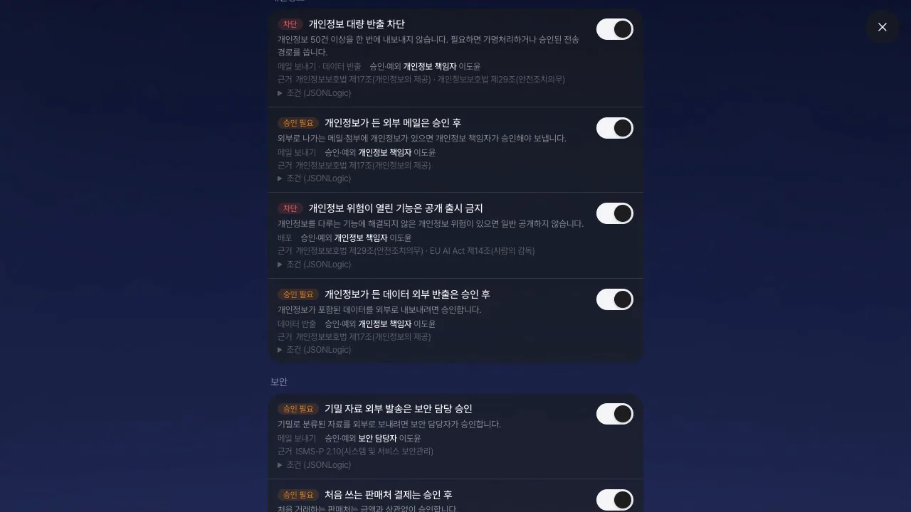
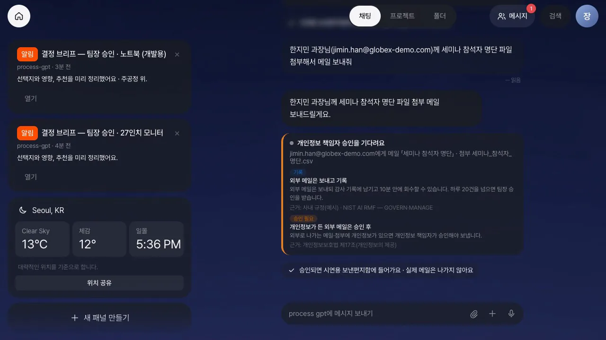
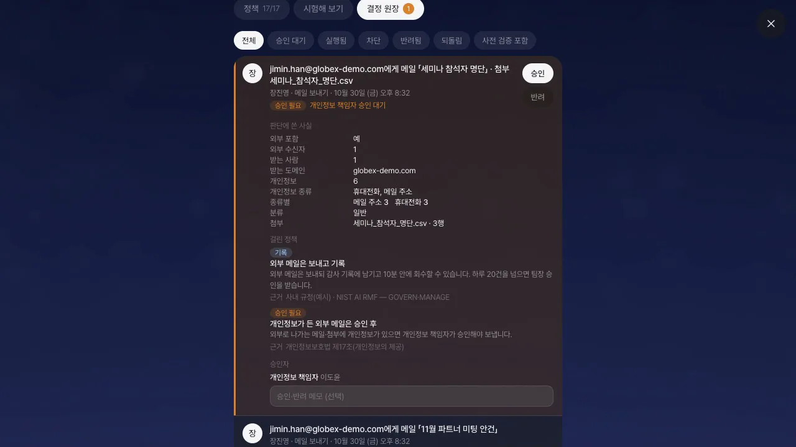
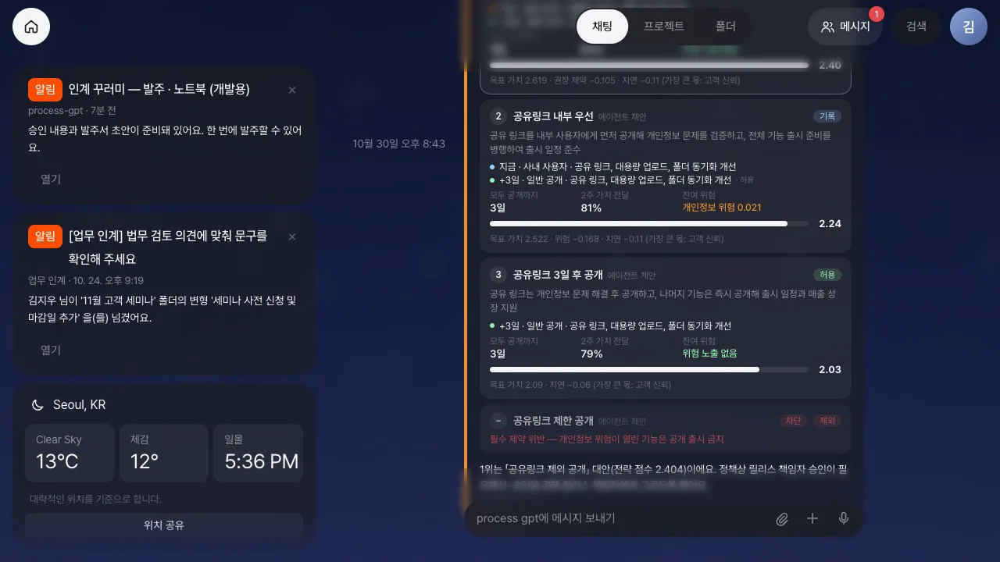
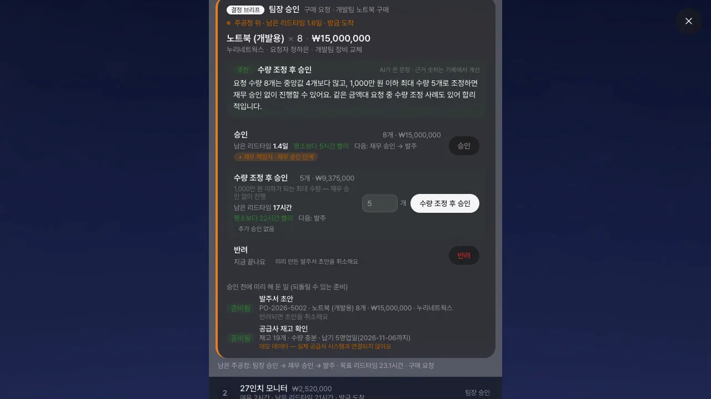
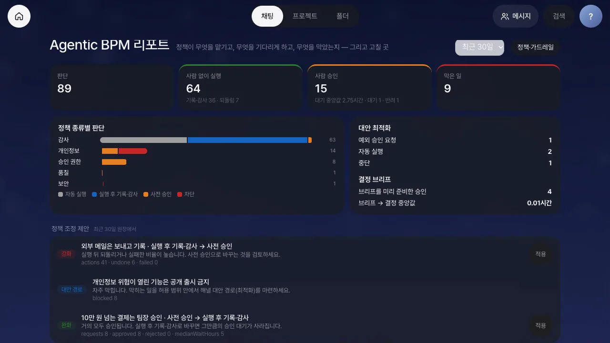

비서와 에이전트가 메일 발송·결제·구매·출시처럼 결과가 남는 일을 하기 전에, 회사 정책이 그 일을 자동 실행·실행 후 기록·사전 승인·차단 가운데 하나로 판단합니다. 메일 네 가지 판단, 승인자의 일, 막힌 출시의 대안 찾기, 결정 브리프, 원장 리포트와 정책 조정을 차례로 따라 합니다.
지금까지 비서는 여러분이 시킨 일을 했습니다. 이 장부터는 비서에게 어디까지 혼자 해도 되는지를 회사가 정합니다. 사람이 모든 일을 승인하면 비서를 쓰는 의미가 없고, 아무것도 보지 않으면 사고가 납니다. 가드레일은 이 둘 사이에 선을 긋는 규칙입니다.
PoC 기능입니다
이 장의 기능은 Process GPT Lite 의 Agentic BPM PoC(브랜치 feat/agentic-bpm)입니다. 메일은 실제로 나가지 않고 시연용 보낸편지함에만 들어가고, 출시는 시연용 배포 기록에만 남습니다.
네 가지 판단#
| 판단 | 화면 표시 | 뜻 | 예 |
|---|---|---|---|
| 자동 실행 | 허용 | 확인 없이 바로 합니다 | 사내 메일 |
| 실행 후 기록 | 기록 | 바로 하되 감사 기록을 남기고, 정해진 시간 안에는 되돌릴 수 있습니다 | 외부 메일(10분 안에 회수) |
| 사전 승인 | 승인 필요 | 하지 않고 보관했다가, 승인자가 승인하면 그때 합니다 | 개인정보가 든 외부 메일 |
| 차단 | 차단 | 하지 않습니다 | 개인정보 50건 이상 반출 |
한 일에 여러 정책이 걸리면 가장 엄격한 판단을 따릅니다. 판단은 정해 둔 규칙(조건식)으로만 하고, AI 모델이 승인 여부를 정하지 않습니다. 모든 판단은 결정 원장에 남습니다.
정책·가드레일 화면#
「설정 › 정책·가드레일」에는 탭이 셋 있습니다.

| 탭 | 내용 |
|---|---|
| 정책 | 메일·결제·구매·발주·출시·데이터 정책. 정책마다 판단, 설명, 근거(법·사내 규정), 승인자 역할과 지금 그 역할을 맡은 사람, 조건식. 켜고 끄기는 관리자만 |
| 시험해 보기 | 행위와 사실을 넣으면 어떻게 판단하는지 보여 줍니다. 실행하지도, 원장에 남기지도 않습니다 |
| 결정 원장 | 판단의 기록. 관리자는 모두, 다른 사람은 자기 판단과 자기가 승인할 요청만 봅니다. 승인·반려·회수를 여기서 합니다 |
화면 위쪽의 「전략맵 ›」「Agentic BPM 리포트 ›」(관리자)는 뒤에서 씁니다.
따라 하기 1 — 메일 네 가지 판단#
장진영으로 로그인해 채팅에서 메일을 부탁합니다. 시연 파일(세미나 참석자 명단, 고객 명단 전체)은 데모 폴더에 들어 있습니다.
- 사내 메일 —
민지님께 내일 주간 회의 자료 메일로 보내줘. 내용은 '내일 10시 회의 전에 한 번 훑어봐 주세요.'받는 사람이 사내라서 카드에 「실행했어요」와 걸린 정책(사내 메일은 바로 보내기)이 보입니다. - 외부 메일 —
한지민 과장님(jimin.han@globex-demo.com)께 「11월 파트너 미팅 안건」 메일 보내줘. 다음 주 화요일 오후 2시, 판교 사무실에서 뵙겠습니다.「실행하고 감사 기록에 남겼어요」 카드에 되돌릴 수 있는 시각이 나옵니다. 되돌리기를 누르면 「되돌렸어요」로 바뀌고 보낸편지함에서 회수됩니다. - 개인정보가 든 외부 메일 —
한지민 과장님(jimin.han@globex-demo.com)께 세미나 참석자 명단 파일 첨부해서 메일 보내줘비서가 첨부에서 휴대폰 번호와 메일 주소를 찾아 「개인정보 책임자 승인을 기다려요」 카드를 올립니다. 메일은 아직 나가지 않았습니다. - 고객 명단 전체 —
한지민 과장님(jimin.han@globex-demo.com)께 고객명단 전체 파일 첨부해서 메일 보내줘개인정보가 너무 많아 「정책에 막혔어요」 카드가 근거(개인정보보호법 조항)와 함께 나옵니다.

요청 문장
메일 요청에 「일정」「메일함」「gmail」을 넣으면 Gmail 연결 도구로 가서 이 가드레일을 거치지 않습니다(PoC 의 한계). 받는 사람의 이름과 주소를 함께 쓰면 비서가 사람을 헷갈리지 않습니다.
따라 하기 2 — 승인자의 일#
- 이도윤(개인정보 책임자)으로 로그인하면 홈에 「승인 요청 — …세미나 참석자 명단」 알림이 와 있습니다. 열기를 누르면 결정 원장의 그 줄이 강조돼 열립니다.
- 원장 줄에는 누가 누구에게 보내려는지, 개인정보 몇 건이 어떤 종류인지, 어느 정책이 걸렸는지가 있습니다. 메일 본문과 개인정보 원문은 원장에 남지 않습니다.
- 메모(예:
참석자 본인 동의 확인했습니다)를 쓰고 승인을 누릅니다. 메일은 장진영의 이름으로 그때 나가고, 장진영의 카드가 「이도윤 님이 승인해 실행했어요」로 바뀝니다.

본인 요청은 본인이 승인하지 못합니다
요청한 사람이 그 역할의 담당자이거나 관리자여도 자기 요청은 승인할 수 없습니다(직무 분리). 다른 담당자나 다른 관리자가 승인하고, 본인은 반려(철회)만 할 수 있습니다.
하루 한도. 외부 메일은 한 사람이 하루 20통까지 기록만 남기고 보냅니다. 21번째부터는 팀장이 승인합니다. 김민지로 외부 메일을 21통째 보내면 카드에 「기간 안 21번째 (20건까지)」가 보이고, 결정 원장에는 앞의 20통이 「기록」으로 남아 있습니다.
따라 하기 3 — 막힌 출시의 대안 찾기#
영상: 막힌 출시의 대안 찾기 (2:02)
정책에 막혔다고 일이 끝나지는 않습니다. 에이전트가 허용 범위 안의 다른 길을 만들고, 회사 전략에 비추어 순위를 매깁니다.
- 김민지로 「정책·가드레일 › 전략맵 ›」을 엽니다. 목표 넷(고객 신뢰·출시 일정 준수·매출 성장·개발 생산성)에 우선순위(1이 가장 높음), 위험 허용 수준, 필수·권장 제약이 있습니다. 고객 신뢰는 1순위이고 개인정보 위험은 「낮음」만 허용합니다.
- 「이번 출시」에는 기능 셋과 QA 에이전트가 찾은 문제(공유 링크의 개인정보 과다 노출)가 있습니다. 금요일 16:00 을 고르고 출시 요청을 누릅니다.
- 「대화에서 보기」를 누르면 막힌 이유(개인정보 위험이 열린 기능은 공개 출시 금지)와 대안 카드가 있습니다. 대안마다 정책 판단(미리 판단), 2주 시뮬레이션(모두 공개까지·가치 전달·잔여 위험), 전략 점수가 붙고, 필수 제약을 어긴 대안은 이유와 함께 빠집니다.
- 1위(공유 링크를 뺀 분리 출시)는 릴리스 책임자 승인이 필요해서, 장진영에게 고르는 카드가 갑니다. 장진영이 승인하고 이 대안으로를 누르면 고른 것이 곧 승인입니다. 전략맵의 배포 기록에 「배포됨(시연)」과 공유 링크의 「계획 +3일」이 남습니다.
- 관리자(이도윤)가 고객 신뢰의 우선순위를 5로 낮추면 「최근 최적화」가 지금 기준으로 순위를 다시 계산합니다. 미리 보기는 아무것도 기록하지 않습니다. 이 순위로 다시 실행하면 1위가 된 내부 사용자 먼저 공개가 바로 실행됩니다(정책이 기록을 남기고 허용하므로).
- 「보안 점검 실패로 가정」을 켜고 다시 요청하면 모든 대안이 필수 제약에 걸려, 예외 권한자(보안 담당자)에게 넘어갑니다. 「예외 권한자가 없다고 가정」까지 켜면 멈춥니다.

| 순서 | 규칙 |
|---|---|
| 바로 실행 | 1위가 허용·기록이고 2위보다 점수가 0.1 이상 높을 때 |
| 승인자에게 고르게 함 | 1위에 승인이 필요할 때 — 승인자의 선택이 곧 승인(요청자 본인의 선택은 아님) |
| 예외 권한자에게 넘김 | 모든 대안이 필수 제약에 걸릴 때. 그런 사람이 없으면 멈춤 |
따라 하기 4 — 승인 대기 줄이기: 결정 브리프#
영상: 결정 브리프로 승인 대기 줄이기 (1:56)
승인이 늦어지는 까닭의 상당 부분은 판단할 자료를 모으는 시간입니다. 에이전트가 승인자보다 먼저 결정 브리프를 만들어 둡니다.
- 정하은으로 「설정 › 승인함」에서 + 구매 요청 올리기를 누르고 두 건을 올립니다:
27인치 모니터6개 × 420,000원(한빛컴퓨터),노트북 (개발용)8개 × 1,875,000원(누리네트웍스). 1,000만 원이 넘으면 양식에 「재무 승인까지」가 보입니다. - 장진영(팀장)의 승인함은 들어온 순서가 아니라 남은 주공정이 긴 순서입니다. 나중에 온 노트북이 1번이고 「주공정 위」가 붙습니다.
- 요청을 열면 브리프가 이미 있습니다: 추천과 근거(지난 이력의 숫자), 선택지(승인·수량 조정 후 승인·반려)마다 추가로 필요한 승인(예: + 재무 책임자)과 지금 결정하면 남는 리드타임. 수량을 줄여 1,000만 원 아래로 승인하면 「추가 승인 없음」이 됩니다.
- 「승인 전에 미리 해 둔 일」에는 발주서 초안과 재고 확인이 있습니다. 승인 전 발주는 정책이 막지만, 되돌릴 수 있는 초안은 허용합니다. 승인을 누릅니다.
- 이도윤(재무 책임자)의 브리프에는 팀장의 결정과 의견이 실려 옵니다. 승인합니다.
- 김민지(구매 담당)에게는 인계 꾸러미(두 사람의 결정, 결정 근거, 발주서 초안)가 옵니다. 초안대로 발주를 누르면 초안이 「발주됨」이 됩니다.
- 장진영이 모니터 요청을 반려하면 미리 만든 초안이 「취소됨」으로 바뀝니다(보상). 정하은의 「내 구매 요청」에는 발주됨과 반려가 남습니다.

측정
승인함의 「승인 대기·리드타임 측정 보기」는 시드 이력(94건)과 이번 요청의 리드타임을 같은 방식으로 나눠 보여 줍니다. 시연의 "후" 값은 스크립트가 바로 승인한 것이라 동작 확인용이고, 실제 승인자의 대기가 얼마나 줄지는 말해 주지 않습니다.
원장 리포트와 정책 조정#
영상: 원장에서 배우기 — 리포트와 정책 조정 (1:11)
관리자는 「정책·가드레일 › Agentic BPM 리포트 ›」(/agentic)에서 지난 7·30·90일의 원장을 봅니다.
- 숫자: 판단 수, 사람 없이 실행한 일(그중 기록·되돌림), 사람 승인과 대기 중앙값, 막은 일
- 정책 종류별 판단: 보안·개인정보·승인 권한·감사·품질별로 어떤 판단이 많았는지
- 대안 최적화·결정 브리프: 막힌 일을 대안으로 푼 결과, 브리프를 미리 준비한 승인
- 정책 조정 제안: 원장에서 나온 제안을 「적용」으로 반영합니다
| 제안 | 언제 | 적용하면 |
|---|---|---|
| 완화 | 사전 승인 요청이 5건 이상이고 거의 모두(반려 5% 이하) 승인됨 | 실행 후 기록으로 — 그만큼의 대기가 사라짐 |
| 강화 | 실행 후 기록한 일의 10% 이상이 되돌려지거나 실패함 | 사전 승인으로 |
| 대안 경로 | 차단 정책에 5번 이상 막힘 | (적용 버튼 없음) 대안 최적화를 마련하라는 신호 |

예를 들어 「10만 원 넘는 결제는 팀장 승인」의 요청 8건이 모두 승인됐고 대기 중앙값이 5시간이면 완화가 제안됩니다. 적용한 뒤 「시험해 보기」에서 결제 13만 원을 넣으면 「승인 필요」 대신 「기록」으로 판단합니다.
리포트의 한 달치
시연 테넌트의 리포트에는 scripts/seed-agentic-history.mjs 가 넣은 한 달치 시연 이력(제목이 [이력] 으로 시작)이 들어 있습니다. --reset 으로 지웁니다.
알아 둘 점#
- 개인정보는 패턴(주민등록번호·휴대폰·메일 주소·계좌번호 비슷한 번호)으로 찾습니다. 이름과 주소는 아직 찾지 못합니다.
- 텍스트가 아닌 첨부(xlsx·pdf·docx)는 「검사하지 않음」으로 표시하고 위험으로 보지 않습니다.
- Gmail 연결 도구로 보내는 메일은 아직 이 가드레일을 거치지 않습니다.
- 대안 최적화의 뒷 단계(예: 공유 링크 3일 뒤 공개)는 계획으로만 남고, 자동으로 예약되지는 않습니다.
이것으로 7부를 마칩니다. 다음 장에서는 지금까지 배운 것을 새 고객 요청 한 건에 처음부터 끝까지 써 보는 종합 과제를 합니다(27장).
확인 문제
- 외부 메일에 개인정보가 3건 들어 있고, 보내는 사람에게는 오늘 21번째 외부 메일입니다. 「사전 승인」을 내는 정책이 둘(개인정보, 하루 한도)입니다. 누가 승인합니까?
- 장진영은 팀장이면서 관리자입니다. 장진영이 요청한 13만 원 결제(팀장 승인 필요)를 장진영이 승인할 수 있습니까?
- 출시 대안 가운데 1위가 「승인 필요」이고 2위가 「허용」입니다. 최적화는 무엇을 합니까?
- 결정 브리프의 「승인 전에 미리 해 둔 일」에 발주서 초안이 있습니다. 요청이 반려되면 그 초안은 어떻게 됩니까?
답
- 개인정보 책임자입니다. 같은 판단을 낸 정책이 여럿이면 하루 한도 같은 감사 정책은 승인자 자리를 양보합니다. 결정 원장에는 걸린 정책이 모두 남습니다.
- 없습니다. 본인 요청은 역할이나 관리자 여부와 상관없이 본인이 승인하지 못합니다. 다른 관리자가 승인하거나, 장진영이 반려(철회)합니다.
- 바로 실행하지 않고 1위의 승인자에게 고르는 카드를 보냅니다. 승인자가 고르면 그 선택이 곧 승인입니다. 1위가 허용이고 2위보다 0.1 이상 앞설 때만 바로 실행합니다.
- 취소됩니다(보상). 미리 하는 일은 되돌릴 수 있는 것만 하고, 반려되면 되돌리고 원장 줄도 「되돌림」으로 바뀝니다.